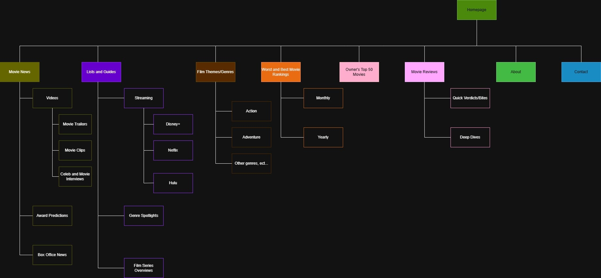
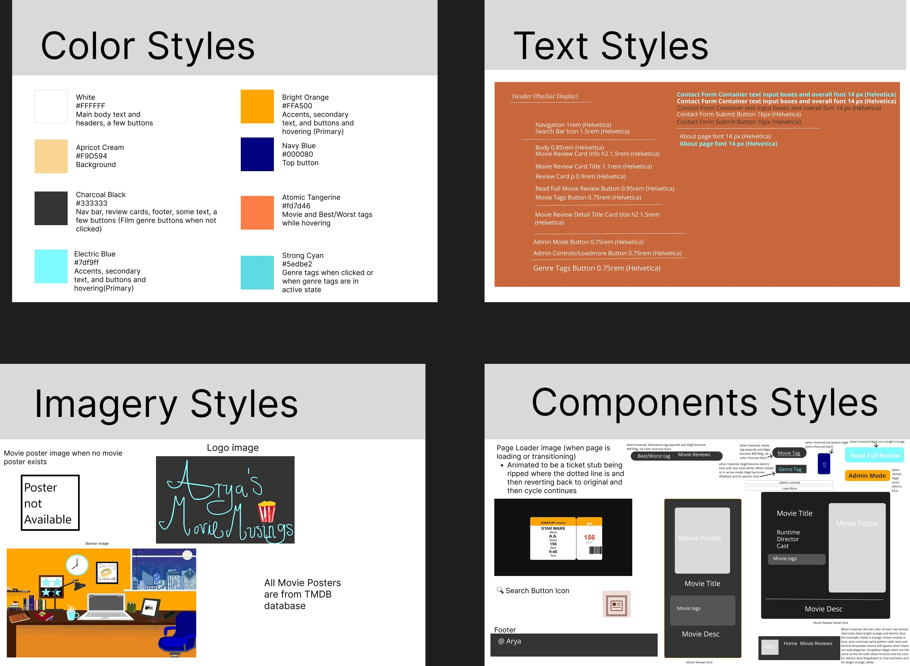
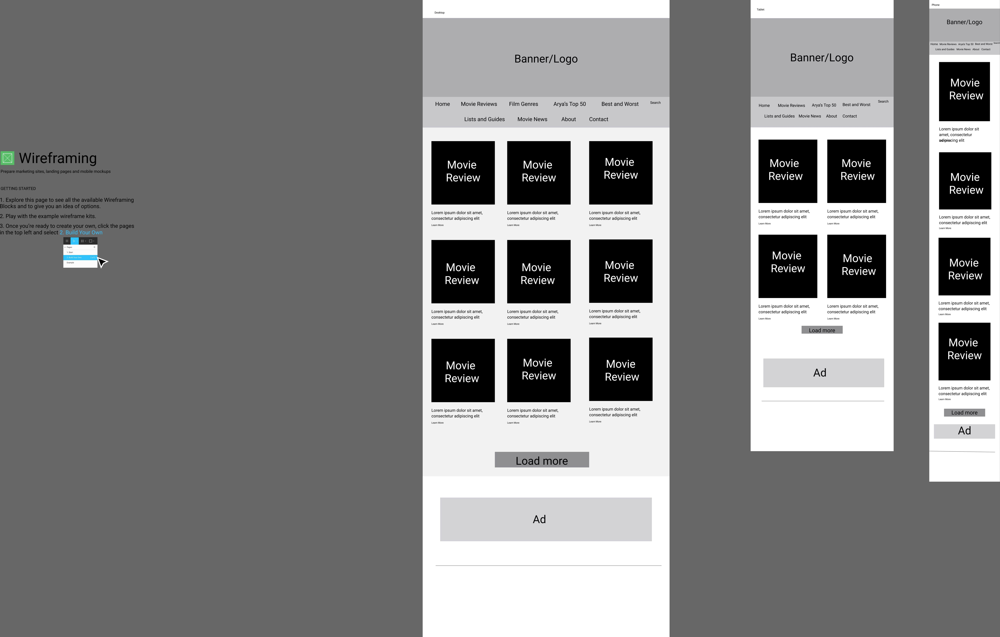
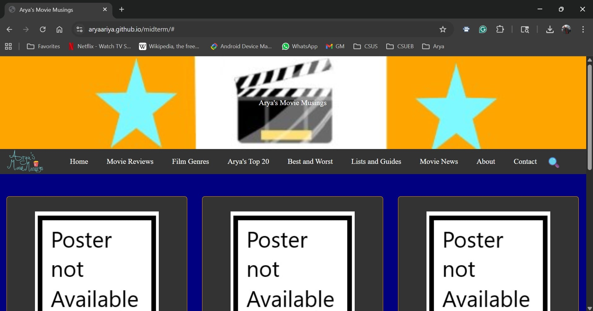
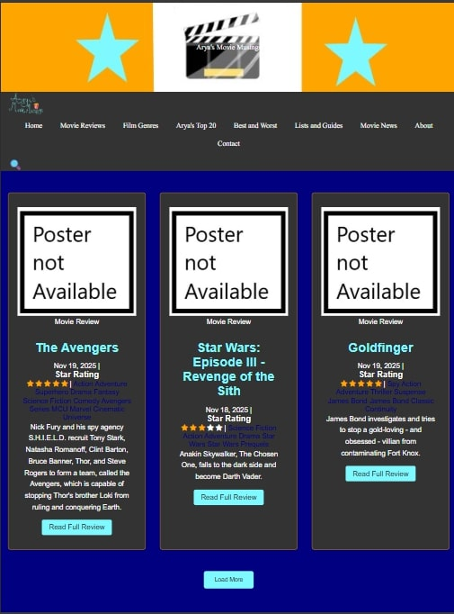
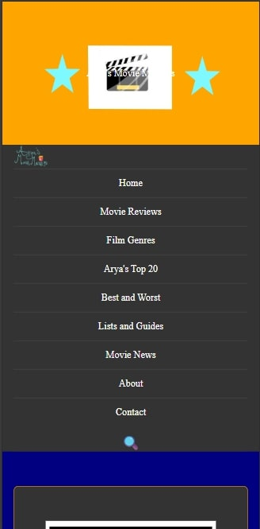

Arya's Movie Musings
Arya's Movie Musings is a . I am a big movie fan short introduction to the project. Describe the purpose, the client, or the story behind it.
Overview
This project examines the end-to-end UX and UI design process behind creating a movie review website that centers on my personal opinions, ratings, critiques, and in-depth analyses of films.
The overall goal was to design, code, and create a platform that provides insightful, easy-to-navigate, and accessible content for a wide range of movie lovers, ranging from casual viewers to dedicated cinephiles.
Role
- UX researcher
- UX designer
- UX writer
- UX engineer
Tools
- Visual Studio Code
- Figma
- GitHub
- TMDB Database (The Movie DB)
- Formspree.io
Details
- Duration: November 2, 2025 - December 14, 2025
- Company/Client = Myself
Process
The process for this project consists of the following:
Research
- Context study
- Target audience
- Pain points
- Competitive audit
Analysis
- Problem statement
- Project Goals
- Use cases
- Executive Summary
Ideation
- Content strategy
- Information architecture
- Visual design direction
Design
- Low-fidelity wireframes
- Prototypes
Feedback
- Peer critiques
- Before/After critiques
Handoff
- Final product
- Case study summary
- Reflection and Next Steps
Research
Context study
The movie review landscape is crowded, but many existing ones fall into two extremes: overly posh/academic or overly commercial with no personality. Users often struggle to find a space that feels insightful, personal, and easy to navigate
Target Audience
I identified six primary users, each with their own needs, motivations, and behaviors.
- Cinephiles and Film Students
- Casual Viewers and Streaming Suscribers
- Parents and Families
- Older Adults
- Genre Fans (Horror, Sci-Fi, Action, etc.)
- Pop Culture Followers
Pain Points
The following are the core pain points shared by all of the primary users that this project aims to take into consideration:
- Overwhelming layouts with too much text
- Poor search and filtering tools
- Lack of personalization
- Inconsistent categorization of films
- Sites feel either too posh/academic/stuffy or too commercial
- Mobile experiances are often poorly optimized
Competitive Audit
I did a competitive audit on two websites
- Moria - The Science Fiction, Horror, & Fantasy Film Review
- Strengths:
-
- Easy Navigation
- Simple palatte
- Weaknesses
-
- Lacks color and polish
- Feels cramped
- Needs more categories and imagery
- RogerEbert.com
- Strengths
-
- Strong navigation
- Great search and filter
- Clean layout
- Weaknesses
-
- Palette is slightly too bright
Analysis
Problem Statement
Movie lovers and users struggle to find a movie review platform that offers both quick, accessible recommendations and deeper, well-organized analyses tailored to their diverse viewing needs that don't have clutter or lack depth and personality.
Project Goals
The website needed to:
- Inform users through reviews, ratings, and critiques
- Guide users toward movies that match their interests, mood, or platform
- Support discovery with filters, lists, and genre hubs
Use cases
I want to read a deep, thoughtful analysis, opinion, and review of a movie
I want to stay updated on trailers, interviews, and award predictions
I'm looking for a movie to watch on Netflix or Hulu
I'm trying to find genre-specific recommendations
Executive Summary
This movie site will deliver a fully designed and functional movie review website that blends cinematic visual identity with a user-centered structure to provide quick recommendations, in-depth analysis, and intuitive discovery for a diverse audience of film lovers.
Ideation
Content Strategy
The site's content ecosystem consists of:
- Homepage with featured reviews, lists, and news
- Movie Reviews
- Film Genres
- Best & Worst Rankings (monthly + yearly)
- Lists & Guides (streaming picks, genre spotlights, film series overviews)
- Movie News (trailers, clips, interviews, award predictions, box office updates)
- Arya’s Top 50 Movies
- About and Contact pages
Information Architecture
I created a sitemap to help me figure out the structure and organization of the website:
Visual Design Direction
I created several stylesheets to help me plan out the color palette, typography, imagery, and a couple of site elements
Design
Low-fidelity Wireframes
I created a few low-fidelity wireframes in Figma to visualize a consistent experience across devices - desktop, tablet, and mobile. I did only one page since the rest of the pages are quite similar or won't change much across devices
Prototypes
I coded a few prototypes of a few of the pages together through Visual Studio Code:
I also tested one of the pages to make sure that it's responsive on desktop, tablet, and mobile
  Feedback
Peer Critiques
I shared my prototype website with several of my peers, and I got feedback in the process, which I then implemented into my project. The most notable ones were:
"Banner/Header image is too plain and simple"
Peers noted that while the site stands out in color palette, the banner image was too simple and did not convey anything or add anything to the site.
"The horizontal drop-down menus are too small and make the site feel cluttered"
Some peers felt that the horizontal drop-down menus made the site feel cluttered and were hard to see.
"The font on the navigation bar could be changed"
Many peers felt that the font used on the navigation bar doesn't match the fonts used by the rest of the site.
"The navigation is comprehensive, but could be reduced"
Peers highlighted that while the navigation is easy to navigate, there are a lot of navigation items, and they take up a lot of space.
"The background color and the tags color could be changed"
Peers noticed that the background color and the tags color were too dark to be noticed, since it was dark blue on black, which made it hard to notice and barely visible.
"The logo size could be increased"
Peers felt that the logo was tiny, and as such was not prominent and not visible as much.
Before/After Critiques
Final Outcome: Live Website
See the final website in action link: screenshot of homepage 2-4 key screens (desktop + mobile) The final outcome is a fully functional movie review website built using the visual system, IA, and interaction patterns defined in this case study. The live site demonstrates the complete user flow - from browsing reviews to exploring genres, rankings, and curated lists."

Reflection and Next Steps